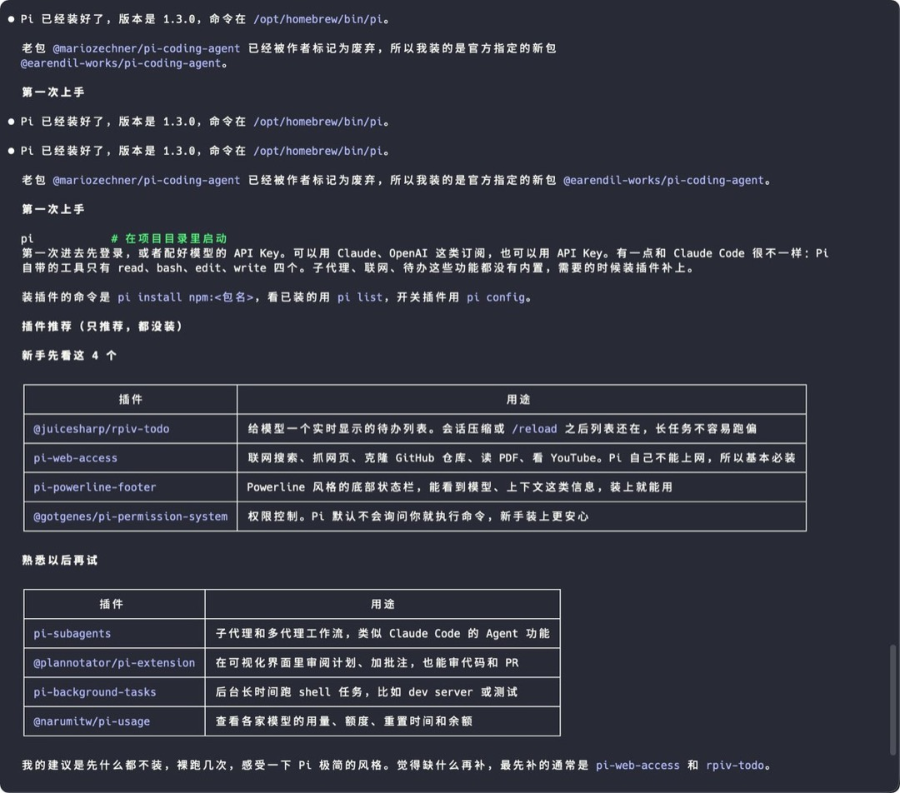
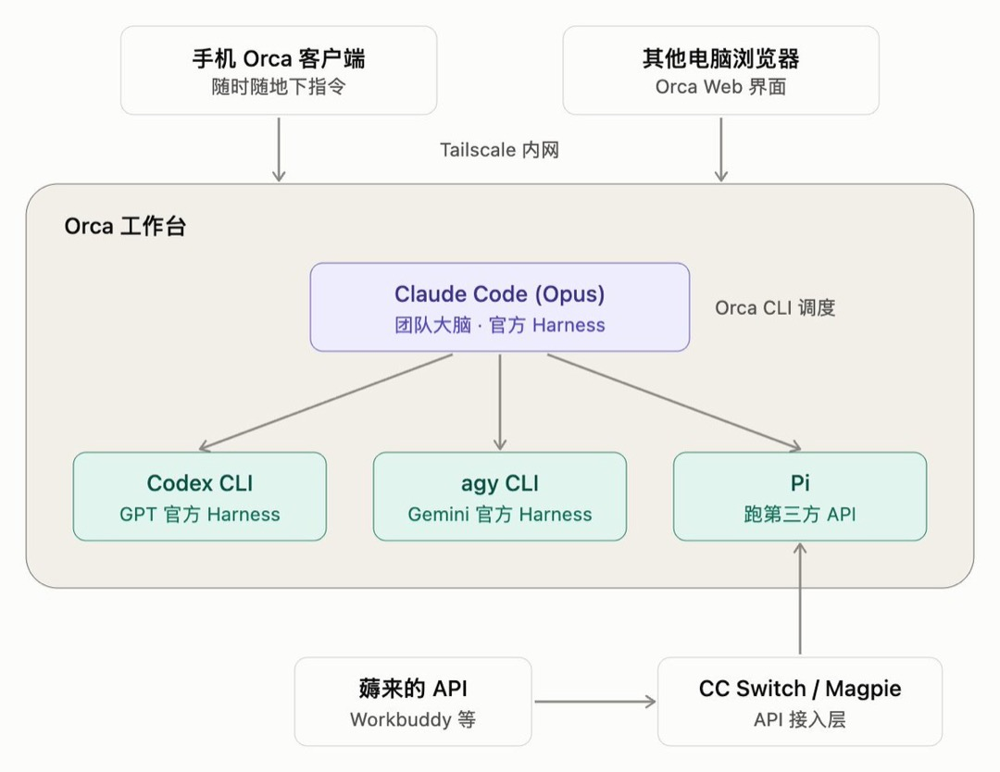
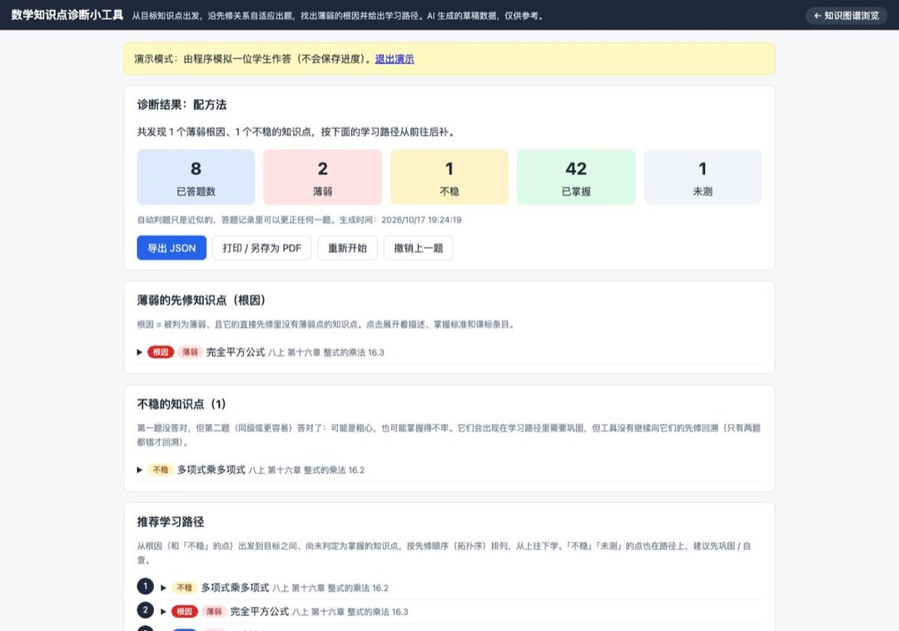
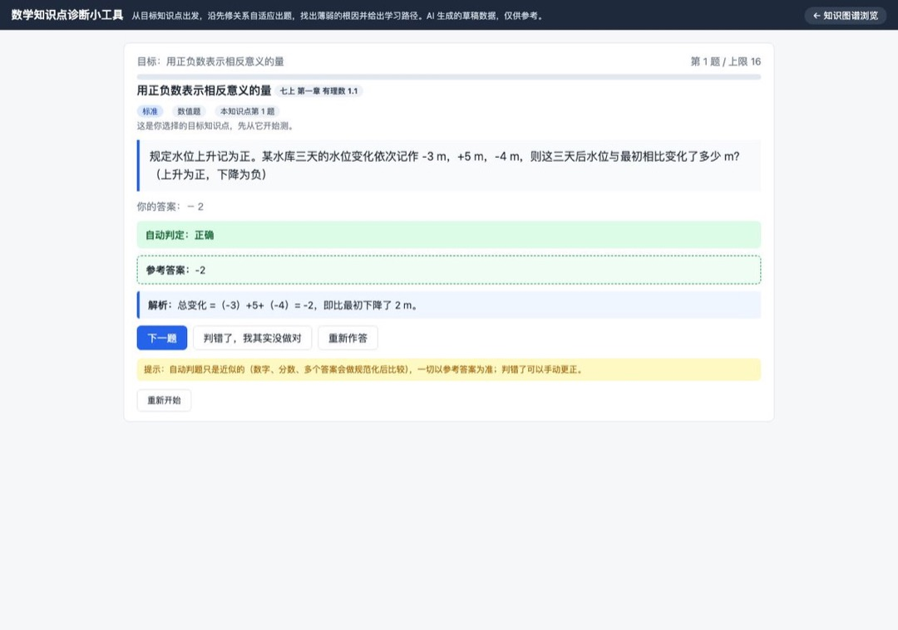
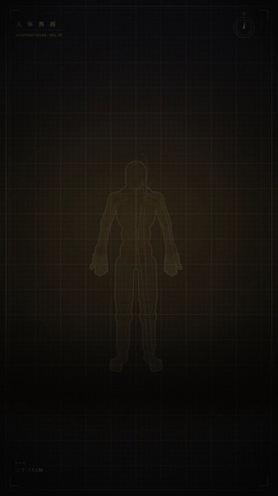
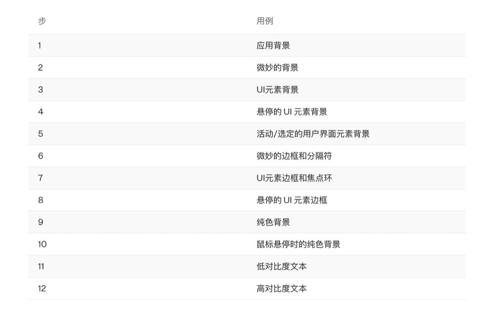
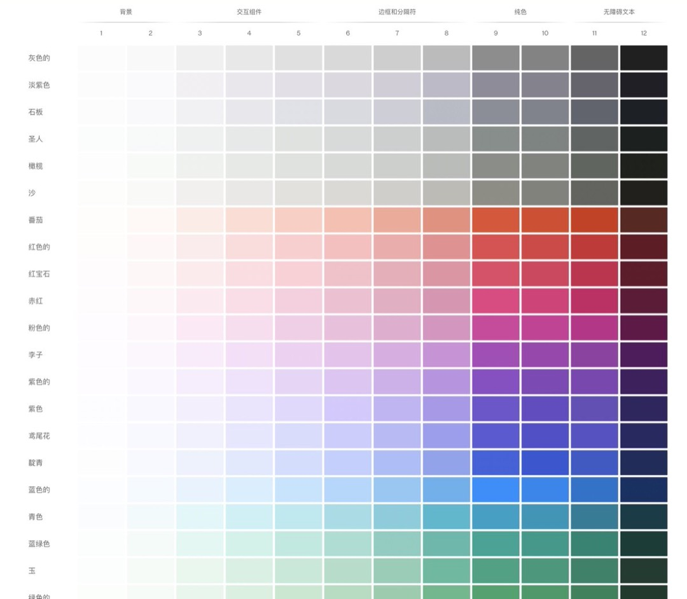

本期速览
02 Opus 经 Orca 调度多模型协作
03 DeepSeek 上线自建搜索 API
04 Claude 三步测验读懂 AI 代码
05 初中数学知识图谱开源支持学情诊断
06 DeepSeek 视频画质不及 Opus
01｜Pi 必装八款插件补齐联网与权限
来源（X） · @aehyok · 2026-10-18 13:07
顺便看看 Pi 中国区形象大使 @xiaomovps 墨神的插件文章
1、@juicesharp/rpiv-todo：给模型一个实时显示的待办列表。会话压缩或 /reload 之后列表还在，长任务不容易跑偏
2、pi-web-access：联网搜索、抓网页、克隆 GitHub 仓库、读 PDF、看 YouTube。Pi 自己不能上网，所以基本必装
3、pi-powerline-footer：Powerline 风格的底部状态栏，能看到模型、上下文这类信息，装上就能用
4、@gotgenes/pi-permission-system：权限控制。Pi 默认不会询问你就执行命令，新手装上更安心
熟悉以后再试
5、pi-subagents：子代理和多代理工作流，类似 Claude Code 的 Agent 功能
6、@plannotator/pi-extension：在可视化界面里审阅计划、加批注，也能审代码和 PR
7、pi-background-tasks：后台长时间跑 shell 任务，比如 dev server 或测试
8、@narumitw/pi-usage：查看各家模型的用量、额度、重置时间和余额

引用内容
小墨同学 @xiaomovps
中文译文
原文
02｜Opus 经 Orca 调度多模型协作
来源（X） · @corndogjpn2 · 2026-10-18 09:39
原则：为确保获得最佳性能及进化红利，各模型只用自家官方Harness。
Action：依次装好Claude Code,Codex CLI, agy cli
原则：薅来的API不能不用，不用难受。
Action：用CC Switch 或 Magpie接入自己喜欢的接入就行，我薅Workbuddy接入了Pi。
原则：必须要有移动端：
Action：安装Orca，自带移动端，且新版自带基于Tailscale的内网Web服务。
原则：必须要能编排，苦力活不要让Opus干。
Action：直接和Opus说，你在Orca里面工作，请使用Orca的CLI命令，以命令行的方式调度Codex，agy ，pi，完成XXXXXX工作，你是团队大脑，你会根据任务难度分配工作给团队其它Agent，以节约自己的额度。
体验：
自家模型套自家马具，性能最佳；Opus会鞭打Codex，agy，pi三个小弟干活，人类不用操心；手机上打开Orca客户端，其它电脑访问Orca Web服务，界面，体验都是统一的。
本人工作不会涉及到issus驱动，Linear驱动或者复杂的多人协作工作流，目前这样我很满意

03｜DeepSeek 上线自建搜索 API
来源（X） · @alacheng · 2026-10-18 07:56
引用内容
DeepSeek @deepseek_ai
中文译文
🔍 Search & Fetch API 现已向所有人开放！
由我们自研的搜索引擎驱动，全球每日服务数亿次请求。
💰 每个端点：每 1,000 次调用 $0.75。
📖 文档：https://api-docs.deepseek.com/guides/search
📌 目前，通过 DeepSeek Harness、Claude Code 和 Codex 中的服务端工具发起的 Search & Fetch 调用对 DeepSeek API 用户免费。计费将于 2026 年 10 月 31 日 UTC 16:00 开始。
3/4
原文
🔍 Search & Fetch APIs are now open to everyone!
Powered by our in-house search engine, serving hundreds of millions of requests daily worldwide.
💰 Each endpoint: $0.75 per 1,000 calls.
📖 Docs: https://api-docs.deepseek.com/guides/search
📌 Search & Fetch calls via server-side tools in DeepSeek Harness, Claude Code, and Codex are currently free for DeepSeek API users. Billing starts Oct 31, 2026, at 16:00 UTC.
3/4
04｜Claude 三步测验读懂 AI 代码
来源（X） · @vincemask · 2026-10-18 12:34
现在，最大的挑战变成了：你还能看懂 AI 在自己代码库里写了什么吗？
Anthropic 工程师 Thariq Shihipar 分享了同事 Suzanne 的一套工作流，专门解决 AI 编码带来的理解盲区。
面对 AI 一次性生成的 500 行代码，别急着 Review、合并，可以先让 Claude 考考你：
-画架构图：用 ASCII 图展示新增代码的执行流程和模块关系。
-反向讲解：向 Claude 解释你对状态管理、边界条件和执行逻辑的理解，让它指出遗漏。
-模拟考试：让 Claude 针对代码的潜在故障和异常场景-不断提问，直到你真正理解每个被修改的文件。
可以直接使用 Claude 的解释模式，或者自定义一个 /quiz Skill。
AI 让写代码越来越快，但理解代码的责任，始终在开发者身上。
尤其是那些要部署到生产环境的代码。
引用内容
Vince 聊开发 @vincemask
中文译文
原文
05｜初中数学知识图谱开源支持学情诊断
来源（X） · @hassanyehiaa · 2026-10-18 17:28
但是今天我把它分享给大家，先声明，商用需要授权，感觉有用可以给仓库上个小星星
开源的初中数学知识图谱，还能顺着它诊断孩子到底卡在哪个知识点上
1.一共 333 个知识点、616 条前置关系，对齐 2022 版课标和人教版七上到九下的教材
2.诊断从目标知识点开始考，答错了就顺着前置知识往回追，直到找到真正没学会的地方，最后给出一条按顺序补的学习路线
3.1407 道题，大部分能自动判分，答案都用程序重新算过一遍
GitHub：https://github.com/xiaoyang111222/cn-math-taxonomy
个人学习、教学可以免费用（CC BY-NC 4.0）


06｜DeepSeek 视频画质不及 Opus
来源（X） · @akokoi1 · 2026-10-17 23:05
DeepSeek在DSH中使用，生成这个视频耗时30分钟。消费¥1。
Opus是在Claude Code中使用，耗时10分钟，消费5X订阅的5小时额度2%。
总体来说，Opus的文案，运镜，画面都更优。DeepSeek表现也很可以了，如果哪天Claude号被封了，DeepSeek用来应急是没问题的。
以下是测试提示词：
生成一个视频，主题是: 穴位名字为什么这么怪：合谷、太冲、足三里，"谷""冲""里"其实是按山川地理起的名，可以拿人体当地图来讲。
引用内容
WY @akokoi1
尽量给了比较简单的提示词，让它们自由发挥。
猜猜看哪个是DeepSeek-V4.1-Flash-1017，哪个是Opus 5.5？

07｜Radix 色板让配色不再出错
来源（X） · @ZaynHao · 2026-10-18 13:07
如何打造一致、且颜色相对具有一点独特性的 UI、颜色系统。
核心就是 radix-ui colors 那套色板，这是我一直在使用的对于我来说非常好用的颜色 token 系统。
好在哪里？无脑按照规则来用，怎么搭配都不会出错。
它提供了 12 个颜色等级，但这些数字不是随便来的，而是按照使用场景分组，每个数字都给了使用场景的定义，这样就比较方便搭配使用。
除此之外，还有一些基础的：
→ 为你的应用选择 3-5 个独特的颜色。这个有很多选择的思路，其中一个就是找一些你喜欢的网站或应用，识别出那些你喜欢的颜色，比如我的 minttr 应用的背景色 f6f4f0。这样就具有了一个基础色调方向。
→ 注意一些 UI 搭配的基础设计，视觉对齐、同一页面不超过 3 个的文字大小、注意间距，还有一些小技巧，比如 0.5px 之类的。
→ 消除 AI 随意输出的东西。比如中点分隔符“·”，将解释性的冗余文本直接呈现到页面等。
写了这么多，感觉可以出个专题了...


引用内容
Lotte @huyuvalley
08｜Job Tracker 自动筛选匹配岗位
来源（X） · @ai_suxiaole · 2026-10-18 19:31
每天刷几十个岗位，挨个看要求、判断匹配度，碰到合适的还得根据 JD 调整简历，投多了连哪些公司投过都容易忘。
GitHub 上有两个开源工具，可以帮你省下不少时间。
1. Job Tracker：负责筛选岗位
根据你的简历、关键词和地点收集招聘信息，自动去重、评分，把岗位清单整理到 Obsidian，方便筛选和跟踪。
2. Resume Matcher：负责修改简历
把原始简历和岗位 JD 交给它，生成针对这个岗位的简历修改建议和版本，还能导出 PDF。
两个工具配合起来，先筛出匹配的岗位，再针对岗位修改简历，最后自己检查确认后投递。
建议先拿几个真实岗位试试，尤其是 AI 修改过的工作经历、技能和数据，一定要自己核对，别把不存在的经历写进去。
两个项目都是开源的，需要自己安装配置，并不是打开网页就能直接全自动投递。
Job Tracker：https://github.com/Donzhu2020/job-tracker
Resume Matcher：https://github.com/srbhr/Resume-Matcher